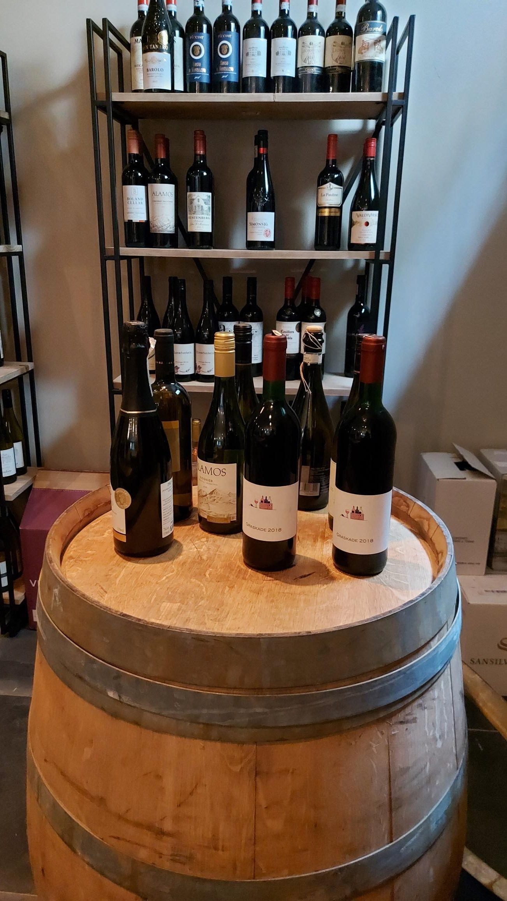
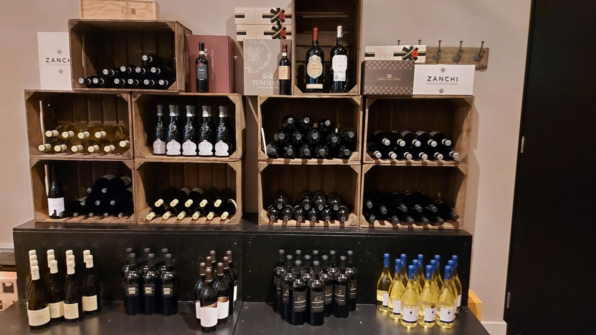

De lekkerste wijnen uit Italië, voorgeproefd door Sander en met persoonlijk advies op maat.
Van Bellen Wijn importeert de lekkerste wijnen uit Italië. De wijnen zijn te koop in de kelder van Van Bellen Wijn. We hebben circa 100 verschillende Italiaanse wijnen op voorraad liggen, een feest voor iedere wijnliefhebber.
De wijnen komen uit heel Italië en zijn allemaal voorgeproefd door Sander van Bellen, al dan niet in Italië zelf. Omdat Italië het land is met de grootste wijnproductie ter wereld, is er een veelheid aan soorten wijnen. Sander reist meerdere keren per jaar naar Italië om diverse wijnboeren te bezoeken en neemt de lekkerste wijnen mee naar huis.

Zoek je de perfecte wijnen voor je bruiloft, feest of diner? Van Bellen Wijn geeft wijnadvies op maat en levert de wijnen ook. Zo adviseerde en leverde Van Bellen Wijn onlangs voor twee trouwerijen de wijnen voor het diner en het feest.
Van Bellen Wijn laat jouw gasten nog meer genieten van een mooi feest.
Vraag wijnadvies aan
Zoek je een leuk en origineel cadeau? Van Bellen Wijn heeft een selectie gemaakt van 15 wijnen in alle prijscategorieën, elk voorzien van een leuke en originele beschrijving op een ansichtkaart. De wijn wordt leuk ingepakt, samen met deze ansichtkaart.
Bekijk relatiegeschenkenVraag advies op maat of kom langs in de kelder. We denken graag met je mee.
Neem contact op